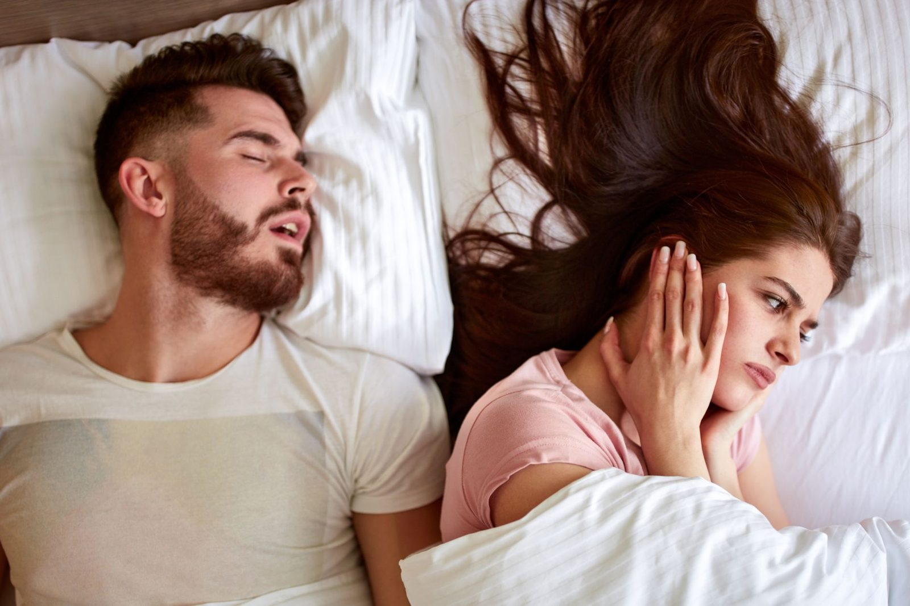

Anti-Snoring & Sleep Apnoea in Cronulla
Snoring and Sleep Apnoea Appliances in Cronulla
Snoring, or diagnosed with sleep apnoea? A dental appliance may form part of your treatment.
Snoring is common, and much of the time it is a nuisance rather than a medical problem.
Sometimes it is a sign of obstructive sleep apnoea, a condition in which the airway repeatedly narrows or closes during sleep, interrupting breathing. Untreated, obstructive sleep apnoea is associated with daytime sleepiness, high blood pressure, cardiovascular disease, type 2 diabetes and an increased risk of motor vehicle accidents.
The two situations require different responses, and telling them apart is not something a dental practice can do. That is where this page starts.

Opening 16 November 2026. Register your interest for priority booking.
Open until 7pm Mondays. Early appointments from 7am Fridays. Nervous patients are always welcome. We take time to explain your options clearly.
Snoring and Sleep Apnoea Appliances in Cronulla: in detail
Dentists do not diagnose sleep apnoea
We want to be direct about this, because a good deal of advertising in this area blurs it.
Obstructive sleep apnoea is diagnosed by a medical practitioner, usually on the basis of a sleep study, which may be conducted at home or in a laboratory. The study measures how often your breathing is interrupted, how far your oxygen levels fall and how fragmented your sleep is. Those measurements determine the severity of the condition and what treatment is appropriate.
What we can do is recognise signs that warrant investigation, refer you to your GP or a sleep physician, and provide an oral appliance where one has been indicated as part of your treatment.
What we cannot do is tell you whether you have sleep apnoea, or how severe it is, by looking in your mouth.
Signs worth raising with your doctor
- Loud, persistent snoring, particularly with pauses in breathing
- Someone observing that you stop breathing, gasp or choke during sleep
- Waking unrefreshed despite an adequate night in bed
- Daytime sleepiness, especially falling asleep unintentionally
- Morning headaches
- Difficulty concentrating, memory problems or irritability
- Waking frequently, or needing to urinate repeatedly overnight
- A dry mouth or sore throat on waking
If you recognise several of these, particularly witnessed pauses in breathing or daytime sleepiness, see your GP. If you fall asleep while driving, treat that as urgent.
What an oral appliance does
A mandibular advancement splint is a custom made device worn during sleep. It holds the lower jaw slightly forward, which increases the space at the back of the throat and reduces the tendency of the airway to collapse.
For snoring
without sleep apnoea, an appliance can reduce or eliminate the noise for many people.
For obstructive sleep apnoea
, appliances are an established treatment option, generally recommended for mild to moderate cases, and for patients with more severe disease who cannot tolerate CPAP. CPAP, which delivers pressurised air through a mask, is usually the first line treatment for moderate to severe sleep apnoea and is more effective at controlling it. Some patients manage well with CPAP. Others cannot tolerate it, and for them an appliance that is worn is more useful than a machine that is not.
Which is appropriate for you is a decision made with your doctor, informed by your sleep study, not a decision made in a dental chair.
How it works here
Referral first.
If you have not been assessed, we will refer you to your GP or a sleep physician before making anything. Fitting an appliance for snoring in someone with undiagnosed severe sleep apnoea risks masking the noise while the underlying condition continues untreated. That is the central reason we insist on this sequence.
Dental assessment.
An appliance places sustained force on the teeth and jaw joint, so we assess whether your teeth, gums and jaw joint can tolerate it. Insufficient teeth, active gum disease or existing jaw joint problems may make an appliance unsuitable.
Fitting and titration.
The appliance is made from scans or impressions and fitted, then adjusted gradually over several weeks to find the position that works with the least advancement necessary.
Medical follow up.
Where an appliance is treating diagnosed sleep apnoea, a follow up sleep study is generally recommended to confirm it is actually controlling the condition. Feeling better is encouraging but is not the same as objective control.
Ongoing dental review
to monitor tooth position and jaw joint comfort.
Side effects to expect
Common, and mostly manageable.
Jaw or muscle soreness on waking, particularly early on. Increased saliva, or a dry mouth. Tooth tenderness. A temporary change in how the teeth meet in the morning, which usually settles within a short time of removing the appliance.
The longer term consideration is that appliance use can produce gradual changes in tooth position and bite over years of wear. This is well documented, it is usually minor, and it is one of the reasons ongoing dental review is part of treatment rather than optional.
We will go through all of this before you commit.
Cost and cover
Cost depends on the appliance and on how many appointments the fitting and adjustment stage requires. You will receive a written estimate before anything is made.
Health fund extras cover may contribute, and some funds require documentation of a sleep study. Medicare does not generally cover oral appliances. We can provide item numbers so you can check before proceeding.
Booking
We are at 13 Cronulla Street, Cronulla, and see patients from Woolooware, Burraneer, Greenhills Beach, Caringbah South, Taren Point, Kurnell, Bundeena and across the Sutherland Shire.
Call (02) 8599 9815 or book online.
You may also be looking for
Doors open 16 November 2026. Register now and we will be in touch with your priority booking invitation.